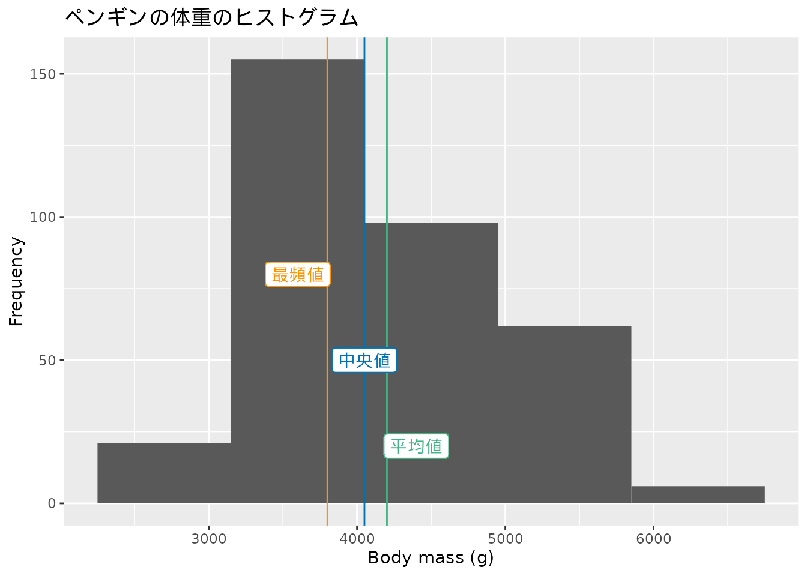
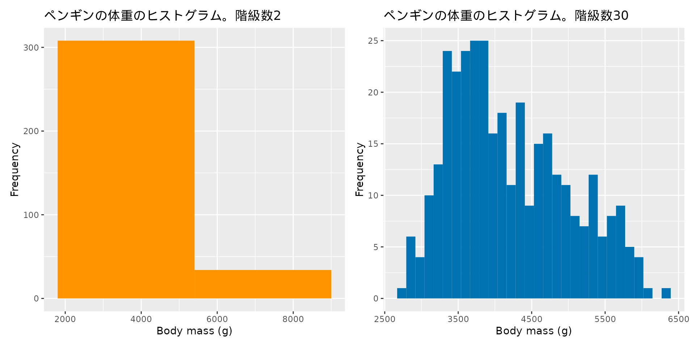
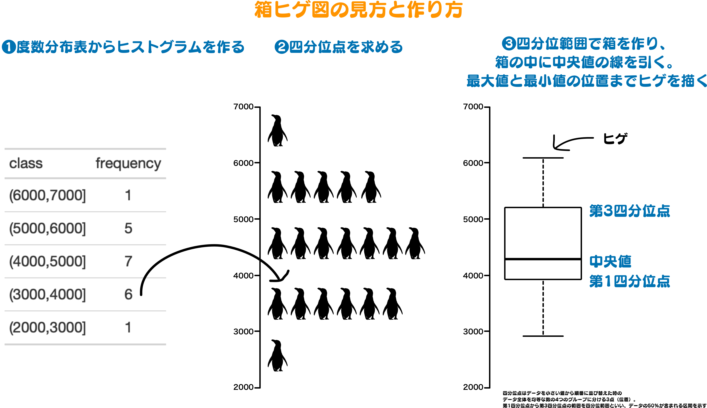
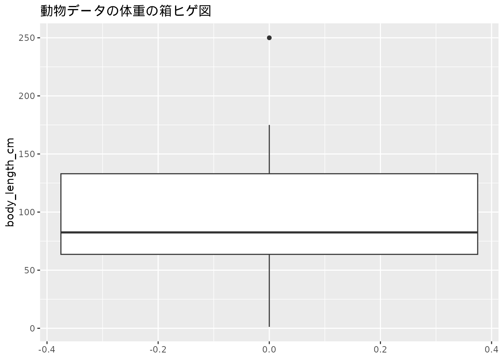
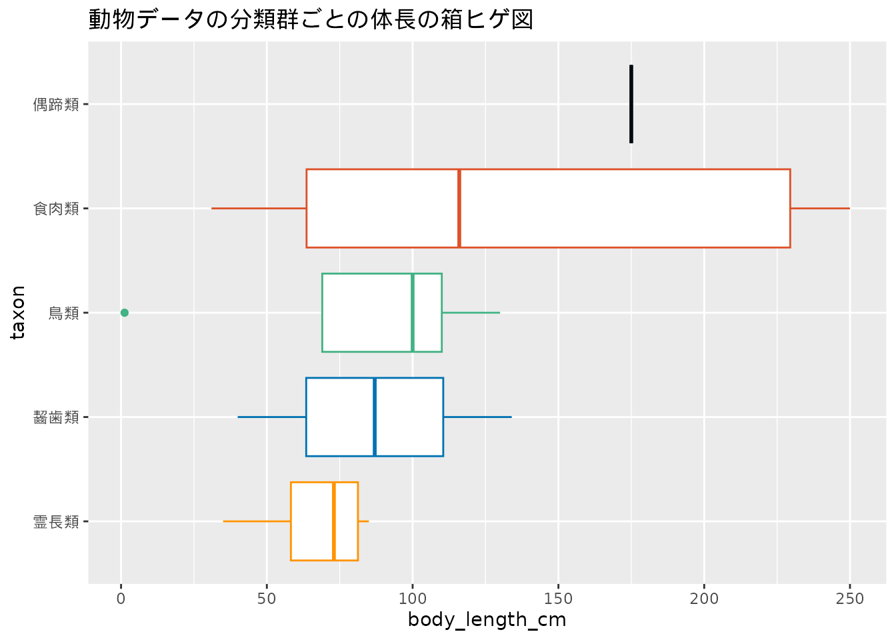

df_zoo$body_length_cm [1] 63.5 100.0 64.0 110.0 85.0 66.0 80.0 168.0 134.0 250.0 130.0 175.0
[13] 31.0 NA 1.2 250.0 35.0 69.0 NA NA 40.0 NAデータ分析の目的の一つに「データを要約すること」があることを示しました。 それでは実際に、データの要約に取り組んでみましょう。 例として動物データの体長を表示します。
df_zoo$body_length_cm [1] 63.5 100.0 64.0 110.0 85.0 66.0 80.0 168.0 134.0 250.0 130.0 175.0
[13] 31.0 NA 1.2 250.0 35.0 69.0 NA NA 40.0 NAこのデータの特徴として言えることは何でしょうか？ 動物データに含まれるわずか22件の数値でも、こうした数値の羅列からデータの特徴を説明することは困難です。
データ分析で扱うデータの件数は数千、数万となる場合もあり、一つ一つデータを見ていくことも 現実的ではありません。 そこでデータを要約するために記述統計量（要約統計量）の計算やデータの可視化が行われます。 記述統計量はデータ全体を表現する代わりとしてデータを要約したものとして機能します。 記述統計量は大きく分けるとデータの位置を示す値を提供する代表値とデータのばらつきを説明する値の2つに考えられます。 記述統計量を組み合わせてデータの分布を考えることで、データのすべてを説明しなくても十分にデータの内容を伝えることが可能になります。 データの可視化は、データを値そのものとして表現するのではなく、グラフやチャートを用いて説明を行うものです。 記述統計量では失われてしまう情報も、グラフ上に投影することで効果的に示せる可能性があります。
数値の傾向を捉えるには、その値が位置する分布を考えることが重要になります。 そこで、まずは複数の数値の性質や特徴をよく表す代表値を調べてみましょう。 代表値によるデータの要約は、データに含まれる数値が位置するところについて大まかに傾向を把握するために用いられます。 代表値という名前の通り、数値によるデータの表現方法となります。
代表値によるデータの要約方法にはさまざまなものがあります。代表的なものは平均値の計算です。 平均値の他に中央値、最頻値が代表値としてしばしば使われます。 それぞれの特徴をみていきましょう。
まず、代表値の代表として平均値を紹介します。 平均値にも複数の種類が存在しますが、ここではより一般的な算術平均を平均値の例として扱います1。 算術平均とは、2個以上のデータ（データの数を\(N\)とします）があるとき、そのすべての数値を足し合わせて\(N\)で割った値のことです。
# 1,3,5,7,10の平均を求めましょう
x <- c(1, 10, 5, 3, 7)
# まずは対象の数値を足し合わせます
sum(x)[1] 26# 次に数値の数(5)によって足し合わせた数値を割り算します
sum(x) / length(x)[1] 5.2# mean()関数を用いて平均値を計算することもできます。
mean(x)[1] 5.2平均値はその言葉の通り、データの真ん中あたりを示す代表値です。 しかし、「あたり」という点に注意してください。 平均値は必ずしもデータの真ん中を示す値ではありません。
平均値を扱うときは外れ値の影響を受けやすい性質があるを理解しておきましょう。 外れ値とはデータの中の極端に大きい・小さい値のことです。 次に示す、動物データの一部の動物の体重について平均値がどのくらいになるか考えてみましょう。
df_zoo_subset <-
df_zoo |>
arrange(weight_kg) |>
filter(name %in% c("ミーアキャット", "リスザル", "モルモット", "コツメカワウソ", "ホッキョクグマ")) |>
select(name, weight_kg)
df_zoo_subset| name | weight_kg |
|---|---|
| ミーアキャット | 0.9 |
| リスザル | 1.1 |
| モルモット | 1.5 |
| コツメカワウソ | 5.4 |
| ホッキョクグマ | 410.0 |
# 動物データの体重の平均はどのくらい？
df_zoo_subset$weight_kg[1] 0.9 1.1 1.5 5.4 410.0平均値は 83.78 です。 この平均よりも小さな動物は4種もいたにも関わらずです。 この値をデータの真ん中と見なしても問題ないでしょうか。
データを見ると一番体重の大きなホッキョクグマが410kgで、二番目に大きな動物とも404.6kgも差があります。 平均値が大きく釣り上げられてしまった原因は、ホッキョクグマの体重が他の動物に比べて極端に大きな値、外れ値であったためです。 ホッキョクグマを除いたときの平均値は2.225となります。 このように平均値はデータの中の外れ値によって大きく左右される特徴があり、注意が必要です（図 3.1）。

中央値は、すべてのデータを大きさの順番に並べたとき、大きい方と小さい方のちょうど真ん中にくる値を指します。 例えば得られている数値が1, 10, 5, 3, 7の場合には数値の数は5個なので、その真ん中の順位は3になります。 この真ん中の順位にくる数値を中央値とします。
# xの数値は大きさの順番になっていないので並び替える
sort(x)[1] 1 3 5 7 10sort(x)[3][1] 5median(x)[1] 5中央値はデータの値に関わらず、順番だけを気にするために外れ値が含まれている場合でも影響を受けません。 先ほどの動物データの一部に対しても中央値を求めましょう。
median(df_zoo_subset$weight_kg)[1] 1.5一方、数値の個数が偶数のときには真ん中の数を決めるのに悩んでしまいます。 例えば4つの数値からなるデータの中央値を求めようとすると、真ん中は2.5番目となってしまいます。データの中には2.5番目の値は含まれません。 このときは2番目と3番目の値の平均を中央値として利用します。
# データの個数が偶数の場合の中央値の求め方
x <- c(1, 2, 4, 6)
mean(c(x[2], x[3]))[1] 3# median()関数で中央値を求められる
median(x)[1] 3中央値の考え方を拡張したものとして四分位点があります。 これはデータを小さい方から並び替えたとき、データ全体を均等な数からなる4つのグループに分ける3つの点（値）のことを指します。 各グループ区切りの値となる点をそれぞれ第1四分位点（25パーセンタイル)）、第2四分位点（50パーセンタイル）、第3四分位点（75パーセンタイル）と呼びます。 第2四分位点はデータの値を並び替えたときの真ん中となる値、つまり中央値です。 また、パーセンタイルというのは値を小さい方から並び替えたときの最後の値の位置を100としたときの四分位点の位置を示す値です。 つまり最小値は0パーセンタイル、最大値は100パーセンタイルとなります。
データの半分が含まれる第1四分位点から第3四分位数までの範囲のことを四分位範囲と呼びます。 四分位範囲は第3四分位点から第1四分位点の値を引くことで求められます。
ペンギンデータの翼の長さ (flipper_length_mm)について四分位点を確認しましょう。 まずはおさらいとして中央値を求めます。
penguins$flipper_length_mm [1] 181 186 195 NA 193 190 181 195 193 190 186 180 182 191 198 185 195 197
[19] 184 194 174 180 189 185 180 187 183 187 172 180 178 178 188 184 195 196
[37] 190 180 181 184 182 195 186 196 185 190 182 179 190 191 186 188 190 200
[55] 187 191 186 193 181 194 185 195 185 192 184 192 195 188 190 198 190 190
[73] 196 197 190 195 191 184 187 195 189 196 187 193 191 194 190 189 189 190
[91] 202 205 185 186 187 208 190 196 178 192 192 203 183 190 193 184 199 190
[109] 181 197 198 191 193 197 191 196 188 199 189 189 187 198 176 202 186 199
[127] 191 195 191 210 190 197 193 199 187 190 191 200 185 193 193 187 188 190
[145] 192 185 190 184 195 193 187 201 211 230 210 218 215 210 211 219 209 215
[163] 214 216 214 213 210 217 210 221 209 222 218 215 213 215 215 215 216 215
[181] 210 220 222 209 207 230 220 220 213 219 208 208 208 225 210 216 222 217
[199] 210 225 213 215 210 220 210 225 217 220 208 220 208 224 208 221 214 231
[217] 219 230 214 229 220 223 216 221 221 217 216 230 209 220 215 223 212 221
[235] 212 224 212 228 218 218 212 230 218 228 212 224 214 226 216 222 203 225
[253] 219 228 215 228 216 215 210 219 208 209 216 229 213 230 217 230 217 222
[271] 214 NA 215 222 212 213 192 196 193 188 197 198 178 197 195 198 193 194
[289] 185 201 190 201 197 181 190 195 181 191 187 193 195 197 200 200 191 205
[307] 187 201 187 203 195 199 195 210 192 205 210 187 196 196 196 201 190 212
[325] 187 198 199 201 193 203 187 197 191 203 202 194 206 189 195 207 202 193
[343] 210 198median(penguins$flipper_length_mm, na.rm = TRUE)[1] 197Rではquantile()関数を使い四分位点を求めます。 また、summary()関数で出力される値からも四分位点を確認できます。
quantile(penguins$flipper_length_mm, na.rm = TRUE) 0% 25% 50% 75% 100%
172 190 197 213 231 quantile()関数の出力の25%、50%、75%の表示がそれぞれ第1四分位点、第2四分位点、第3四分位点です。 50%が中央値と同じ値になっている点を確認できました。
続いてsummary()関数の出力結果を見てみます。 こちらは1st Qu.、Median、3rd Qu.が該当する項目です。 Qu.は四分位点を意味する英語のQuantileに由来する表記です。
summary(penguins$flipper_length_mm) Min. 1st Qu. Median Mean 3rd Qu. Max. NA's
172.0 190.0 197.0 200.9 213.0 231.0 2 平均値や中央値ではデータの位置を示す値として一つの値しかわからなかったのに対して、四分位点を用いることで、より多くの情報を得ることができるようになりました。 この四分位点を利用したデータの視覚的な表現方法として箱ヒゲ図があります。 箱ヒゲ図についてはこの章で後ほど登場します。
最頻値はデータの中で最も頻繁に出現する値のことを言います。 クラスのテストの点数で、96点の人が3人と最も多かったとき、最頻値は96です。ただし92点の人が同様に3人いたときには96、92が最頻値となります。
x <-
c(73, 58, 96, 61, 87, 54, 92, 92, 63, 80,
92, 59, 77, 96, 62, 64, 64, 59, 76, 96)
# 各点数の人数を求めます
table(x)x
54 58 59 61 62 63 64 73 76 77 80 87 92 96
1 1 2 1 1 1 2 1 1 1 1 1 3 3 # 最頻値を求めます
names(which(table(x) == max(table(x))))[1] "92" "96"上記の例は変数が離散変数の場合の最頻値の求め方でした。 連続変数の場合も手順は変わりませんが、数値を適当な間隔でまとめた階級を設定することで判断することがあります。 これについては後ほど、度数分布表を紹介するときに説明します。
データの位置を示す代表値3種類を説明しました。 それではデータの特徴を捉えるのに、平均値、中央値、最頻値のどれを使うのが適切でしょうか。 よく使われるのは平均値ですが、だからと言って平均値がどのような時にも優れているわけではありません。 扱うデータの内容、注目する事柄によって重要な代表値は変わってきます。 前の章で、テストの平均点よりも低かった場合の位置について考えましたが、 そのとき中央値を計算していれば、平均よりも低い点であってもクラスの上位に含まれる可能性があることがわかったはずです。
動物データに対して平均値や中央値、最頻値を求めてみよう。 Rにはここで紹介したmean()やmedian()以外にも 代表値の算出を行う関数が用意されているよ。 それらについて調べて実行してみよう。
コードの例と解説は練習問題をみてね。
代表値によって、データが分布する大まかな位置を知ることができるようになりました。 一方で外れ値を含む平均値や単純な頻度で求める最頻値のように、分布の形を推定することはできません。 外れ値によって中心がずれているかもしれませんし、最頻値が中心であるという保証はないのです。
そこで今度はデータのもつばらつきを考えてみます。 データは代表値から離れて分布しているのか、代表値の周辺に集中しているのか。 データの大まかな中心としての代表値とそのばらつきを知ることで、データの分布についておおよその傾向が掴めるようになります。
ばらつき具合を数値で表現する方法として代表的なものに、範囲、分散、標準偏差があります。 ここでも動物データを例にして算出方法をみていきましょう。
範囲はもっとも単純で、データの最小値と最大値から求めます。 Rでは最小値、最大値を求める関数としてそれぞれmin()関数、max()関数が用意されています。 また、最小値・最大値を同時に出力するrange()関数も利用できます。 これらの関数はいずれも対象の変数を与えることで計算が行われます。
# 動物データの体長について最小値・最大値を求める
# bl ... body_lengthの略称として使います
min_bl <-
min(df_zoo$body_length_cm, na.rm = TRUE)
min_bl[1] 1.2max_bl <-
max(df_zoo$body_length_cm, na.rm = TRUE)
max_bl[1] 250range(df_zoo$body_length_cm, na.rm = TRUE)[1] 1.2 250.0最小値と最大値がわかれば、次のその差を求めます。この値がデータのとりうる範囲となります。 範囲により区間という意味でのデータのばらつきの程度がわかるようになります。
# 動物データの体長の範囲
max_bl - min_bl[1] 248.8# このやり方でもOK
diff(range(df_zoo$body_length_cm, na.rm = TRUE))[1] 248.8範囲を求める際に使う数値はデータの最小値と最大値でした。 そのためいくつかの問題が発生します。 まず、最小値と最大値だけを見ているので、他の値については無視することになっています。 そのため分布がどうなっているかを具体的に知ることはできません。 加えて、最小値・最大値が外れ値となっているある場合に、範囲が過大評価となってしまう恐れがあります。 そこで次に、データのすべての値がもつ情報を利用する分散と、分散を利用した標準偏差を求めることにします。
分散とは、それぞれのデータが平均値を中心としてどのように散らばっているかを示すものです。 分散を求めることで、例えばペンギンの各個体の体長が、平均値から全般的に近い値をしているのか、特定の個体が平均値よりも特段高い（あるいは低い）のか、はたまた体長が高い個体と低いがバラバラにいるのかがわかるようになります。
分散は次のように求めます。
各値と平均値の差を求めたあと、その合計を計算すると、どんなデータであっても合計は０になります。 平均値より小さい・大きい値との差を求めてその合計を出しているので、差を相殺することになっています。 これではばらつきを評価できません。 そこで分散を求める際には、その差を2乗し、値を足し合わせます。 ここまでの内容を整理すると次のように表現できます。
\[ 分散 = \frac{変数の値と平均値の差の2乗の合計}{変数に含まれるデータ数} = \frac{\sum{(x_i - \bar{x})^2}}{N} \]
上記の式は標本分散を求める式となっています。 Rにおける分散の算出はvar()関数で行われますが、ここでの分散は不偏分散と呼ばれるもので データの数から１引いた値で割る点で異なります。 ここまでの内容をおさらいしてみましょう。
df <-
penguins |>
filter(species == "Adelie") |>
select(body_mass_g) |>
filter(!is.na(body_mass_g)) |>
slice_head(n = 5)
df <-
df |>
# 各値について偏差 deviation（平均よりもいくら大きいか小さいか）を求める
mutate(deviation = body_mass_g - mean(df$body_mass_g, na.rm = TRUE))
df| body_mass_g | deviation |
|---|---|
| 3750 | 170 |
| 3800 | 220 |
| 3250 | -330 |
| 3450 | -130 |
| 3650 | 70 |
# 偏差の合計は0になる
sum(df$deviation)[1] 0# 偏差の値はプラスとマイナスが混ざる
df$deviation[1] 170 220 -330 -130 70# 偏差は2乗することでプラスの値のみになる
df$deviation^2[1] 28900 48400 108900 16900 4900# 分散 variance ... ここでは不偏分散
sum(df$deviation^2) / (nrow(df) - 1)[1] 52000# var()関数に対象の変数を直接与えて求めても良い
var(df$body_mass_g)[1] 52000合計が０になる差に対して2乗するのではなく、絶対値をとり、その合計を求めたものを平均偏差と呼びます。 また、分散について平方根を求めたものが標準偏差となります。 標準偏差は散らばりの具合を見るための指標となります。
# 標準偏差
sqrt(sum(df$deviation^2) / (nrow(df) - 1))[1] 228.0351sqrt(var(df$body_mass_g))[1] 228.0351標準偏差を求める際に平方根を利用する理由は、分散を求めたときに2乗したものを元に戻すためです。 具体的には2乗した場合に単位が変わってしまうものを元に戻す必要があるためです。 例えば、長さの単位としてセンチメートルで測ったものならば平方センチメートルとなり、面積の単位になってしまうのを防ぐ効果があります。
これまで見てきたように、代表値やデータのばらつきを調べることでデータがどのような値を持っているのか、その分布の傾向を掴むことができるようになりました。 一方でまだ分布の姿そのものについては明らかではありません。 次の度数分布表やヒストグラム、箱ヒゲ図を作成することで、分布の姿を捉えることができるようになります。
実験や観測により値が得られたら、まずは度数分布表を作ることから始めると全体の分布の状況を理解しやすい傾向があります。 ある値がデータに含まれる数を度数または頻度といいます。 度数分布表とはその名の通り、度数の分布を表形式にまとめたものを指します。 データに対する度数がどのように分布するかを示すかを表したものが度数分布表です。 度数によってすべてのデータに対して大まかな位置を集計することになるため、データの分布が明らかになります。
度数分布表は手元のデータの値をいくつかの階級に分割します。

動物のデータセットの分類群を例にすると、df_zoo$taxonで分類群の値（霊長類や鳥類）を確認し、各値をカウントして度数を求め、それを分類群ごとに集約するという手順をとります。
df_zoo$taxon [1] "食肉類" "鳥類" "食肉類" "鳥類" "霊長類" "霊長類"
[7] "霊長類" "食肉類" "齧歯類" "食肉類" "鳥類" "偶蹄類"
[13] "食肉類" "食肉類" "鳥類" "食肉類" "霊長類" "鳥類"
[19] "鯨偶蹄類" "奇蹄類" "齧歯類" "鯨偶蹄類"結果は次のようになります。
# 度数、頻度を英語で frequency といいます
# 度数が大きな分類群の順で表示するように sort = TRUE を指定しています
count(df_zoo, taxon, sort = TRUE, name = "frequency")| taxon | frequency |
|---|---|
| 食肉類 | 7 |
| 鳥類 | 5 |
| 霊長類 | 4 |
| 鯨偶蹄類 | 2 |
| 齧歯類 | 2 |
| 偶蹄類 | 1 |
| 奇蹄類 | 1 |
対象が量的変数の場合は頻度を簡単に求めることができます。 それでは量的変数、特に連続変数に対し度数を求めるにはどうすれば良いでしょうか。 量的変数に対して連続変数では同じ値をとることが少ないです。 そのため連続変数の度数を求めるときは、変数がとり得る値をいくつかの区間に分割した階級(class)を考えます。 このときの区間の幅を階級幅と呼びます。
ペンギンデータに含まれる体重を例として、まずは階級分けのために、まずは変数の最小値と最大値を調べましょう。 Rでは最小値・最大値を調べるのにrange()関数が利用できることを思い出しましょう。
range(penguins$body_mass_g, na.rm = TRUE)[1] 2700 6300# range()関数を使わないでmin()関数やmax()関数を使っても良い
min(penguins$body_mass_g, na.rm = TRUE)[1] 2700max(penguins$body_mass_g, na.rm = TRUE)[1] 6300最小値と最大値がわかったところで、次は階級と階級幅を設定します。 階級はデータ中のすべての値が含まれるようにします。 ペンギンデータの体重の最小値は2700、最大値は6300ですので、 2000から7000までの階級を設定しておきましょう。 この場合、階級幅を区切りが良い1000とすると階級数は5つあることになります。
つづいて、階級ごとに含まれる値の件数を数えます。
weight_freq <-
table(cut(penguins$body_mass_g,
breaks = seq(2000,
7000,
by = 1000),
dig.lab = 4))tibble::tibble(
class = names(weight_freq),
frequency = weight_freq)| class | frequency |
|---|---|
| (2000,3000] | 11 |
| (3000,4000] | 159 |
| (4000,5000] | 111 |
| (5000,6000] | 59 |
| (6000,7000] | 2 |
以上の手順が量的変数に対する度数分布表の求め方です。 ペンギンデータの体重についての度数分布表を作成することができました(表 3.1)。 3000から4000の区間に含まれる値が最も多く、その次に4000から5000の区間の値、そのほかの区間の値はわずかということがわかります。
ここまではデータを要約する方法として、数値の要約や集計といった処理を行ってきました。 次に登場するヒストグラムはこれまでの例とは異なり、データをグラフで表現する手法になります。 データをグラフ上に可視化することで、データの分布を確認しつづ、データの特徴を素早く捉えることができるようになります。 こうしたグラフ表現はデータに対する説得力を増すためにも使われます。 それでは早速ヒストグラムの作り方を見ていきましょう。
ヒストグラムの元になるのは先ほど求めた度数分布表です。 ヒストグラムでは、グラフの横軸に興味のある変数の階級、縦軸に階級内に含まれる度数を示します。 階級ごとに度数の位置を示す柱を柱の長さによって表現します。 このときに階級の間、つまり柱と柱の間隔を空けないようにします。
ペンギンの体重の度数分布表 (表 3.1) からヒストグラムを作成すると次のようになります(図 3.2)。
p <-
penguins |>
ggplot(aes(body_mass_g)) +
# ヒストグラムでは柱の階級をビン bin と呼びます
geom_histogram(bins = 5) +
ylab("Frequency") +
xlab("Body mass (g)") +
labs(title = "ペンギンの体重のヒストグラム")
pヒストグラムによって一眼で3000から4000の区間の個体が多いことが読み取れます。 全体のデータの散らばりの程度についても大まかに把握することができます。
次に、これまで見てきた代表値やばらつきを表す数値とヒストグラムの関係を見てみましょう。 データ全体の傾向を示すヒストグラムと、代表的な値の関係を見ることで、データに対する理解が深まります。
p +
geom_vline(xintercept = mean(penguins$body_mass_g, na.rm = TRUE)) +
geom_vline(xintercept = median(penguins$body_mass_g, na.rm = TRUE),
color = "red") +
geom_vline(xintercept = as.numeric(names(which.max(table(penguins$body_mass_g))))) +
geom_label(aes(4400, 20),
label = "平均値",
show.legend = FALSE) +
geom_label(aes(4050, 50),
label = "中央値",
show.legend = FALSE) +
geom_label(aes(3600, 80),
label = "最頻値",
show.legend = FALSE)
図 3.3 を見てわかることは、代表値の並びが小さい方から最頻値、中央値、平均値の順に並んでいることです。 ヒストグラムの形が左に長く伸びている（この様子を「裾を引いている」と言います）場合、代表値はこの順番に並ぶことが多くなります。
ヒストグラムを作成するときは、階級数がいくら設けられているかに注意が必要です。 例えば同じデータであっても階級数が異なる場合、ヒストグラムの見た目は大きく異なります。 図 3.4 では、ペンギンの体重について階級数が2のときと30のときのヒストグラムをそれぞれ作成した図を表示しています。 階級数が少ないとデータの分布を把握するのが難しく、逆に階級数が多すぎるときもデータを要約し辛い図になってしまっています。
p1 <-
penguins |>
ggplot(aes(body_mass_g)) +
geom_histogram(bins = 2) +
ylab("Frequency") +
xlab("Body mass (g)") +
labs(title = "ペンギンの体重のヒストグラム。階級数2")
p2 <-
penguins |>
ggplot(aes(body_mass_g)) +
geom_histogram(bins = 30) +
ylab("Frequency") +
xlab("Body mass (g)") +
labs(title = "ペンギンの体重のヒストグラム。階級数30")
p1 + p2 + plot_layout(ncol = 2)
階級の幅が一定でないヒストグラムが存在するよ。
階級数を決める方法としては、最小値と最大値、データの範囲やデータ数などが参考になるよ。
でも階級数によってヒストグラムの見た目が変わると
適切かはわからないよね
スタージェスの法則を用いる
ヒストグラムの他に、グラフを用いたデータの散らばりを表現する方法として箱ヒゲ図 (図 3.5) があります。 四角い箱の上下に髭が伸びているような図であることから箱ヒゲ図と呼ばれます。 「箱」と「ヒゲ」を使った簡単な図ですが、データの分布だけでなく、データを小さい方から並び替えてグループ分けを行ったときの代表的な3つの位置を表現する四分位点も合わせて表示できる図となっています。
箱ヒゲ図の作成手順は次の通りです。 箱ヒゲ図を作成するときは、データの区間と四分位点を求めることが必要になります。

動物データの体重について箱ヒゲ図を作成してみます (図 3.6)。 箱とヒゲについての意味を理解しておく必要がありますが、ヒストグラムのようにデータの分布を確認することができる図となっています。
また箱ヒゲ図の作成方法は上記のものの他に最大値と最小値をヒゲとして利用するものがあります。
df_zoo |>
ggplot(aes(y = body_length_cm)) +
geom_boxplot() +
labs(title = "動物データの体重の箱ヒゲ図")
箱ヒゲ図は異なる複数のデータのばらつきを比較する際にも役立ちます。 ヒストグラムでは複数のデータを比較することが困難ですが、箱ヒゲ図では箱ヒゲを90度回転させて横に描画することで複数データの比較が容易になります。 図 3.7 は動物データの分類群ごとに体長の箱ヒゲ図を作成したものです。 箱ヒゲ図ではデータの散らばりが小さい場合には小さくなり、逆に散らばりが大きい時には大きくなります。 このことから、動物データに含まれる動物のうち、食肉類の体長は種の違いが大きく、霊長類は種のばらつきが小さいことが読み取れます。
# 分類群ごとの箱ヒゲ図を描画
# あらかじめ中央値を計算し、グラフ上では中央値の並びで分類群が表示されるように
# 調整しています。
df_zoo |>
filter(!is.na(body_length_cm)) |>
group_by(taxon) |>
mutate(body_length_median = median(body_length_cm)) |>
ungroup() |>
mutate(taxon = forcats::fct_reorder(taxon, body_length_median)) |>
ggplot(aes(taxon, body_length_cm)) +
geom_boxplot() +
coord_flip() +
labs(title = "動物データの分類群ごとの体長の箱ヒゲ図")
ヒストグラムや箱ヒゲ図で見てきたように、分布の形ががどのような形になっているかを意識することは、データ分析を進めていく際に重要です。 それは分布の形によってデータの特徴が異なるためです。 分布の形はその形に応じて次のような種類があります。
平均として使われるものには、算術平均の他に幾何平均や加重平均などがあります。↩︎